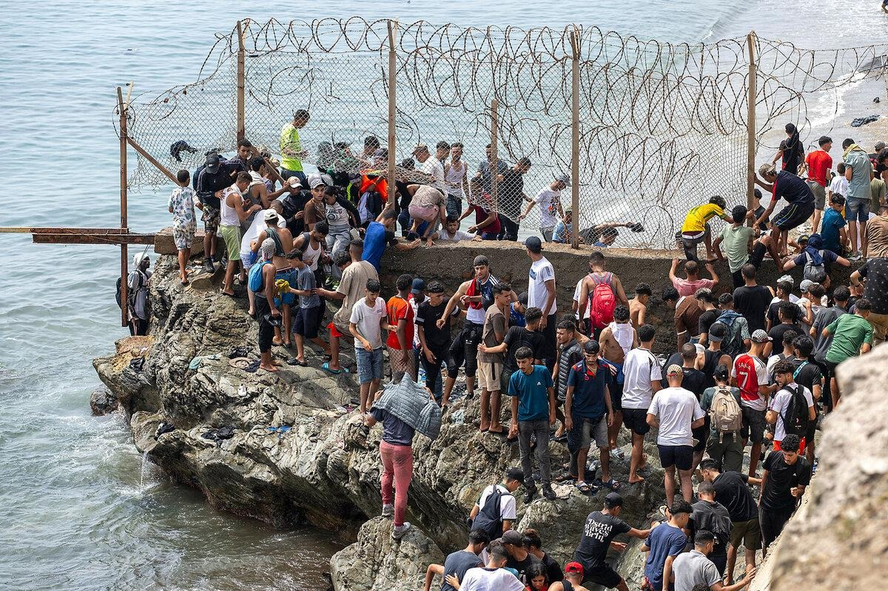
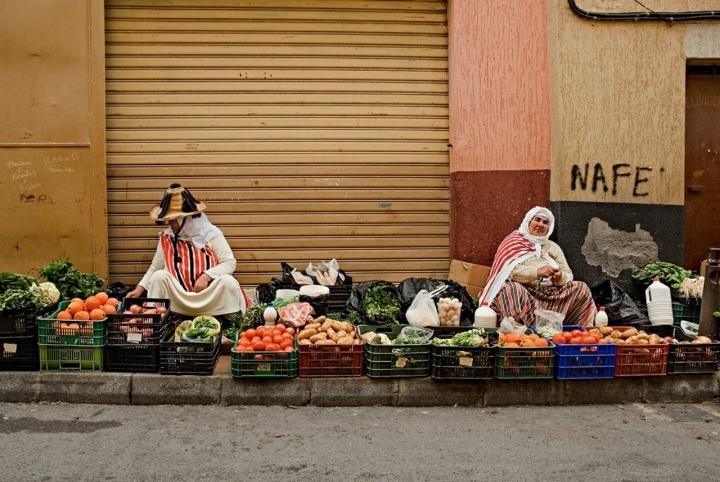

1.Principalele probleme de imigrație din zona Strâmtorii Gibraltar sunt traversările periculoase, traficul de migranți și controlul frontierelor.
Mulți oameni încearcă să ajungă din Maroc în Spania cu bărci mici și nesigure, riscând să își piardă viața.
În același timp, unele grupări profită de situația dificilă a migranților și le cer bani pentru a-i transporta ilegal.
O altă problemă este primirea persoanelor care ajung în Spania, deoarece acestea au nevoie de adăpost, hrană și îngrijire medicală.
De asemenea, migranții se pot confrunta cu dificultăți în găsirea unui loc de muncă, în învățarea limbii și în adaptarea la o cultură nouă.
2. Problemele etnice și culturale din zona Strâmtorii Gibraltar sunt legate de conviețuirea unor comunități cu origini, religii și tradiții diferite.
În orașele spaniole Ceuta și Melilla trăiesc atât persoane de origine spaniolă, cât și persoane de origine marocană.
Uneori, diferențele de limbă, religie și obiceiuri pot duce la neînțelegeri și dificultăți de integrare.
De asemenea, unele persoane se pot confrunta cu discriminare sau prejudecăți din cauza originii lor.
O altă problemă este păstrarea tradițiilor și a identității culturale, în timp ce oamenii se adaptează la societatea în care trăiesc.
Pentru a îmbunătăți relațiile dintre comunități, sunt importante respectul reciproc, egalitatea și acceptarea diversității culturale.

